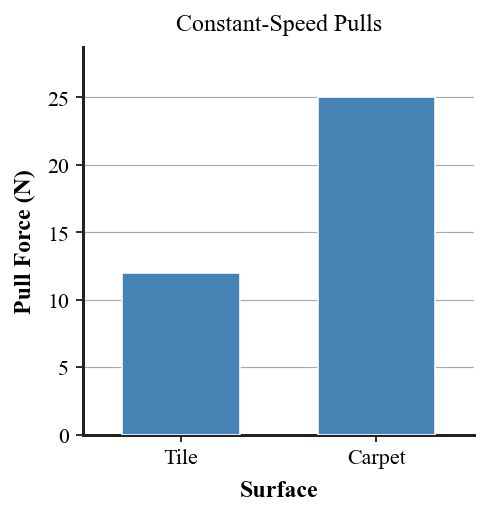
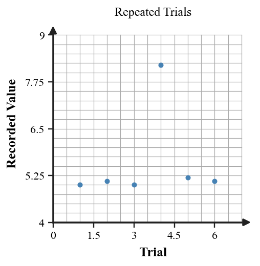

Practice focus: Create and critique force models for real-world situations involving inertia, support force, net force, and equilibrium.
A model of a backpack on a table shows only weight downward. Name the most important missing force.
A force model includes an arrow labeled inertia. State why the arrow is inappropriate.
A scenario says “constant speed in a straight line.” State what a correct model must show about net force.
In a hanging-basket model, name the downward interaction and the upward support interactions.
In a vector diagram, what does a longer force arrow represent?
A wagon is speeding up. Should its force model show zero or nonzero net force?
A wagon is at rest. Can a correct model still include several forces?
A wagon moves steadily. Can a correct model include several forces?
A backpack-on-table diagram has weight labeled upward and support force downward. Are the labels correct?
A force diagram contains left and right arrows of equal length. What does that say about the horizontal net force?
Name one feature that must agree between a written motion description and a force model.
A scientific force model should include every visual detail of the object or only interactions relevant to the question?
Use the flawed backpack model. Add or describe the missing support force and explain how the corrected model matches rest.
Use the incorrect inertia model. Remove the non-force arrow and describe what actual force arrows would depend on the situation.
Create a force model for a backpack resting on the floor. Include weight and support force with appropriate directions and relative lengths.
A crate slides right while a 45 N push acts right and 21 N friction acts left. Find the net force and describe how the model should represent the unequal arrows.
Use the three-wagon comparison to match rest, steady motion, and speeding up with zero or nonzero net force.
A force model for a steady-speed crate shows 40 N right and 25 N left. Name the mismatch and state how one arrow must change.
A sign hangs motionless from two chains. Describe the vertical force balance without assuming each chain alone equals the weight.
Use the surface-pull graph. Which surface requires the larger applied force for constant speed, and what does that imply about the resistive force?

Use the repeated-trial graph to identify a suspicious measurement before building a force-model conclusion.

A lab partner draws 50 N push and 50 N friction but uses visibly different arrow lengths. Describe how the diagram should be corrected.
A written scenario says the object is slowing while moving right. State the required horizontal net-force direction and describe a matching force model.
A person stands still on a scale. Build a two-force vertical model and state the net force.
A lab partner reverses weight and support-force labels on a backpack-at-rest model. Diagnose both direction errors and explain the interaction behind each correction.
Compare a written scenario, motion description, and force diagram for the same object. Describe which representation is inconsistent and how to revise it.
Two lab partners propose different force models for a constant-speed crate. Evaluate the models using arrow lengths, directions, and the equilibrium rule.
A class uses one outlier trial to argue that friction suddenly doubled. Critique the evidence and explain what should be done before changing the force model.
Design and defend a complete force model for an unfamiliar real-world object. State the motion, identify relevant interactions, draw or describe vectors, find whether forces are balanced, and explain how the model predicts the motion.
Critique a flawed force model using both motion evidence and quantitative evidence. Redesign the model, justify every force included, and explain why the revised representation is better supported.